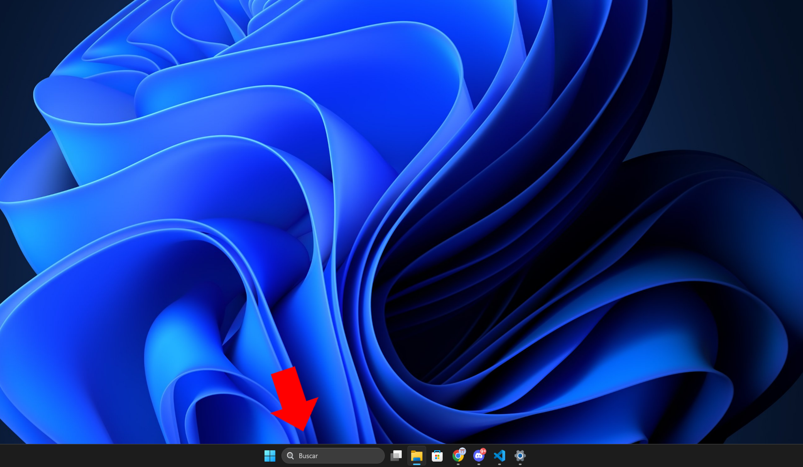
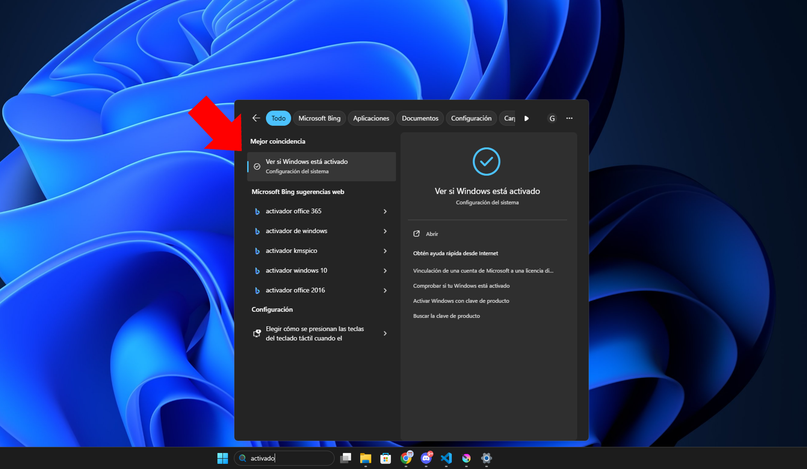
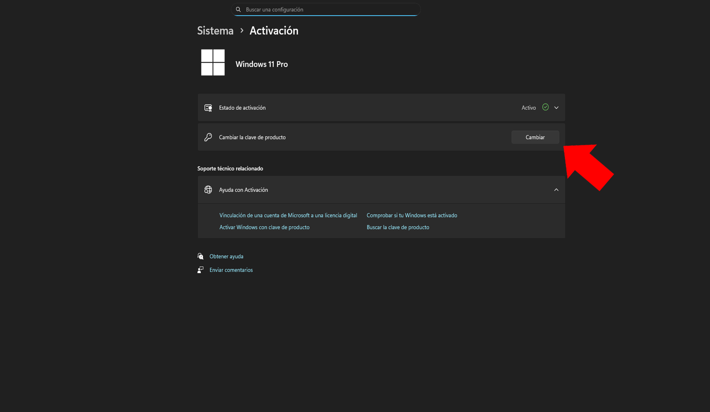
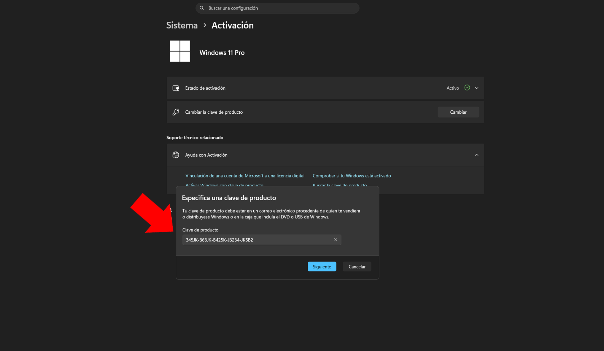
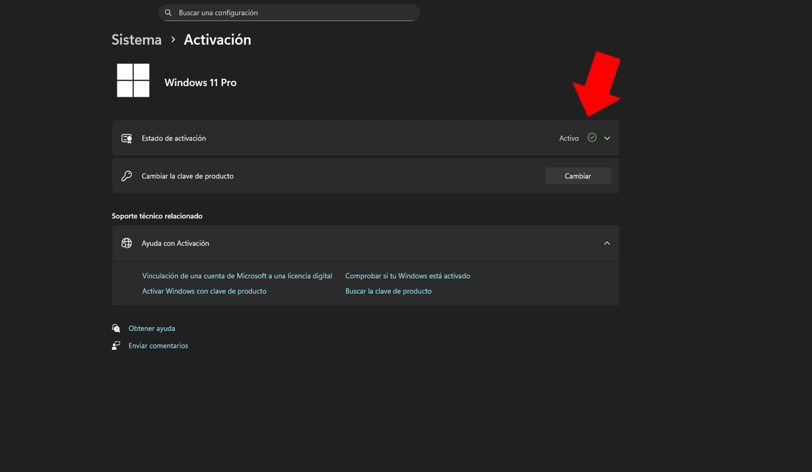

Publicado por NagoKeys · Actualizado el 1 de septiembre de 2026
Si has llegado hasta aquí buscando una clave Windows 11, probablemente te estés preguntando dónde comprar una licencia original al mejor precio. En esta guía te contamos todo lo que necesitas saber: las diferencias entre licencias OEM y Retail, cómo activar Windows 11 sin errores y cuánto cuesta realmente una licencia permanente.
¿Qué es una clave de Windows 11?
Una clave de Windows 11 (también llamada clave de producto o Product Key) es un código de 25 caracteres que activa tu sistema operativo ante Microsoft. Al introducirla en tu PC conviertes tu Windows en una versión 100% original y legal, con todas las actualizaciones de seguridad incluidas.
Windows 11 Home vs Pro: ¿Cuál necesitas?
Antes de comprar tu licencia Windows 11 Home o Pro, debes saber qué versión se ajusta a ti: Windows 11 Home es ideal para uso doméstico, navegar, redes sociales, Office y juegos. La versión Pro añade funciones empresariales como BitLocker Drive Encryption para cifrar tu disco duro, Escritorio Remoto y la posibilidad de unirte a dominios.
Licencias OEM vs Retail: diferencias
La licencia OEM es la opción más económica: se vincula a la placa base del ordenador donde se activa por primera vez. Si cambias de PC, no podrás transferirla. La licencia Retail es transferible: puedes desactivarla de un equipo y usarla en otro cuando quieras. Ambas son licencias permanentes.
¿Cuánto cuesta una clave Windows 11 en NagoKeys?
| Producto | Precio |
|---|---|
| Clave Windows 11 Home OEM | 4,99€ |
| Clave Windows 11 Pro OEM | 4,99€ |
| Clave Windows 11 Home Retail | 9,99€ |
| Clave Windows 11 Pro Retail | 10,99€ |
Precios con licencia original permanente y entrega inmediata por correo.
¿Dónde descargar Windows 11?
Siempre debes descargar Windows 11 desde la página oficial de Microsoft: microsoft.com/es-es/software-download/windows11. Así te aseguras de instalar la versión oficial y de que tu clave de activación funcione correctamente.
¿Cómo activar Windows 11?
Activar Windows 11 es muy sencillo y no lleva más de dos minutos. Estos son los 5 pasos, con captura de cada pantalla, para que no te pierdas ningún paso:
Abre el buscador de Windows
Haz clic en el botón de Inicio o en la lupa de la barra de tareas. Escribe la palabra "activación" o "activar".

Entra en la configuración del sistema
En los resultados de búsqueda, selecciona la opción que dice "Ver si Windows está activado".

Cambiar la clave de producto
Verás una pantalla con el estado de tu sistema. Busca la opción "Cambiar la clave de producto" y haz clic en el botón Cambiar.

Introduce tu licencia NagoKeys
Aparecerá una ventana azul. Escribe o pega los 25 caracteres de la clave que recibiste por correo y pulsa Siguiente.

¡Listo! Windows activado
Después de unos segundos, el sistema validará la clave. Verás un check verde ✅ indicando que el estado es "Activo", sin marca de agua.

Si tu clave no se valida, revisa el post sobre errores de activación más comunes o consulta el tutorial de activación paso a paso completo.
💻 ¿Listo para comprar tu clave Windows 11?
Licencias originales desde 4,99€ con entrega inmediata a tu correo.
Ver Licencias